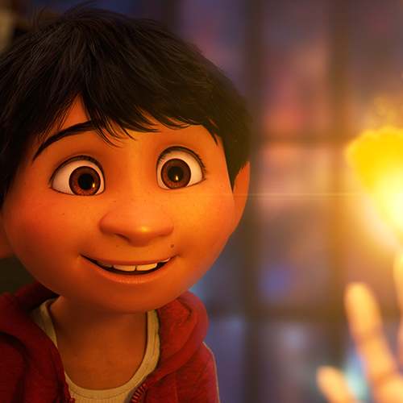
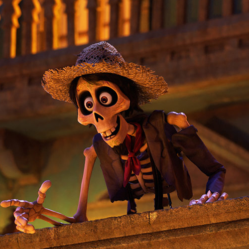
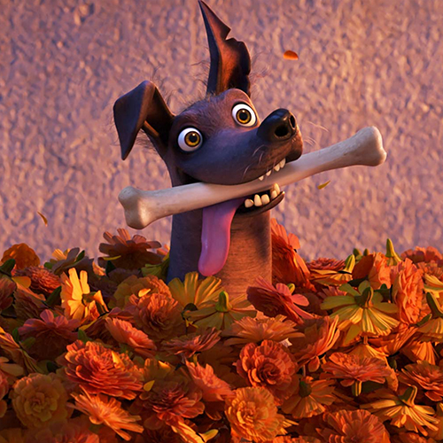
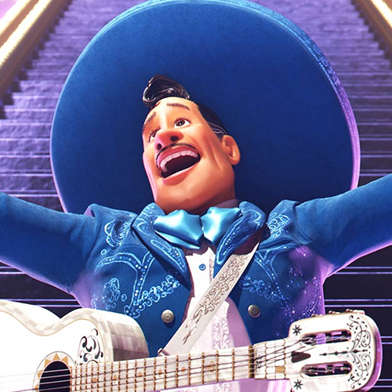
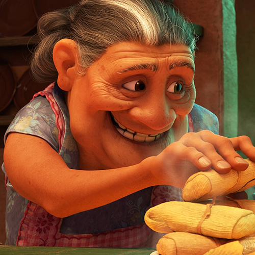
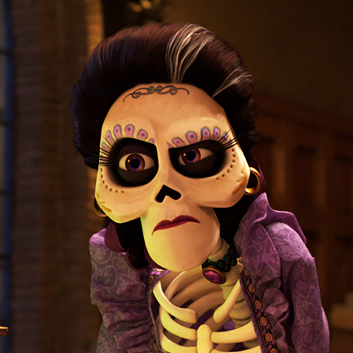
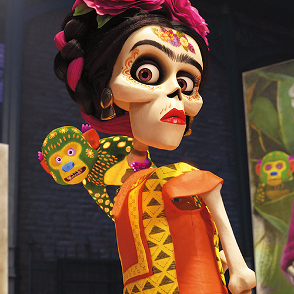
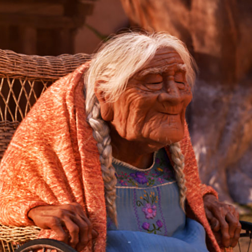

Character
Inhabiting the Land of the Dead is a rich and vibrant community. But these characters had to be built without many of the usual traits because they are all skeletons. “We had to figure out how to give them personality without skin, muscles, noses or even lips,” says character art director Daniel Arriaga. “We played with shapes and did a lot of paintings. We sculpted and studied skulls from every angle to figure out where we could add appeal and charm.”
-

Miguel
Miguel is a 12-year-old who struggles against his family’s generations-old ban on music. “Miguel secretly nurtures this love of music,” says director Lee Unkrich.
-

Héctor
Héctor, a charming trickster in the Land of the Dead, enlists Miguel’s help to visit the Land of the Living.
-

Dante
Dante is a Xolo dog short for Xoloitzcuintli the national dog of Mexico. Nearly hairless, Dante has trouble keeping his tongue in his mouth due to his missing teeth but he’s a loyal companion to Miguel.
-

Ernesto de la Cruz
Miguel’s idol Ernesto de la Cruz, is the most famous musician in the history of Mexico. Revered by fans worldwide until his untimely death, the charming and charismatic musician is even more beloved in the Land of the Dead.
-

Abuelita
Abuelita is Miguel’s grandmother and the ultimate enforcer of the Rivera family rules. She loves her family very much and will do anything to protect them.
-

Mamá Imelda
Miguel is a 12-year-old who struggles against his family’s generations-old ban on music. “Miguel secretly nurtures this love of music,” says director Lee Unkrich.
-

Miguel
Mamá Imelda, Miguel’s great-great-grandmother, is the matriarch of the Rivera family and the founder of their successful shoemaking business. Miguel meets Mamá Imelda in the Land of the Dead and discovers she really does not share his passion for music.
-

Frida
Frida, a ground breaking artistic figure in Mexican culture, continues her expressive vision in the Land Of The Dead and is one of Miguel’s first artistic allies, helping him to see that a life of an artist could actually be more than just a dream.